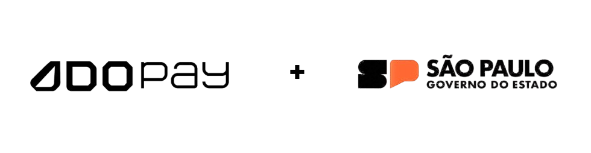

Quem
Somos?
Somos uma startup ecológica e sustentável, que visa viabilizar a higiene publica privada de forma eficiente.
Nosso objetivo é transformar o Brasil em uma referência em sustentabilidade e tecnologia global, globalizando nossos produtos, e viabilizando necessidades.
Cestas para
Bueiros
A situação do nosso país vem sendo seriamente comprometida pelo descarte inadequado de resíduos. Diante disso,
desenvolvemos nosso produto: uma cesta para bueiros. Embora possa parecer uma solução simples, possui grande potencial para auxiliar e contribuir significativamente para a sustentabilidade.
NOSSA EQUIPE


Parceiros
Juntos, empresa, setor financeiro e poder público unem esforços em prol da sustentabilidade e do bem-estar social.